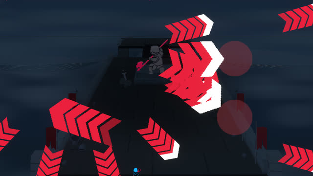
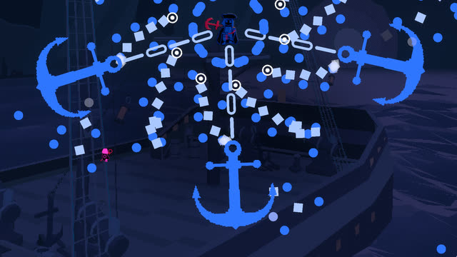
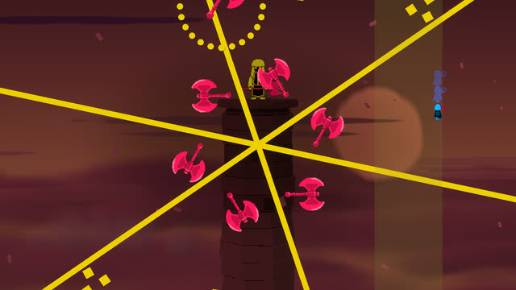
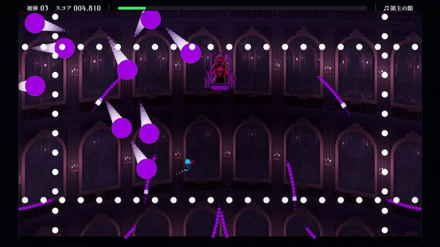
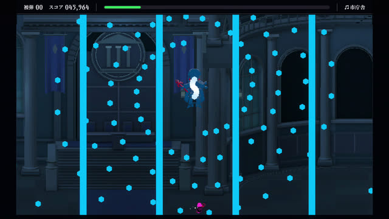
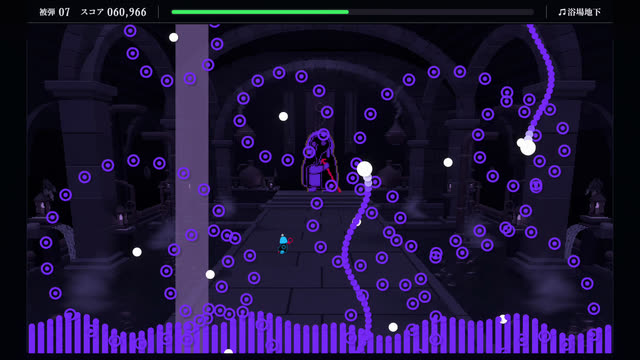

Break through the wall.
Slip through gaps, then dash across dense patterns. A dash grants invincibility when spaced out; rapid repeated dashes only move you.
ARK ART GAMES / BULLET HELL ACTION
Weave through bullet patterns set to music. Use an invincible dash to break through danger, skim past bullets to score, and push for a better run in this single-player bullet hell action game.
01 / THE GAME
Read the patterns, choose your opening, and aim for a clear. Start with survival, then refine your route and dash timing to beat your personal best.
Slip through gaps, then dash across dense patterns. A dash grants invincibility when spaced out; rapid repeated dashes only move you.
Skim past bullets for graze points. Build a graze chain to increase rewards, and dash through bullets for extra points.
Waves of bullets unfold to the music. Choose where to move and when to dash, balancing risk with the pursuit of a better run.
02 / SCREENSHOTS
Select an image to enlarge it. Press Esc to close.






03 / STAGES & DIFFICULTY
↑ ↓ STAGE / ← → DIFFICULTY
EASY / NORMAL / LUNATIC
01STAGE
Catacombs
×1.0A balanced challenge
Each of the ten stages offers three difficulties. Easy is a relaxed challenge, Normal is balanced, and Lunatic is an extreme challenge for experienced players.
Choose a stage, try again, and find your own route through the patterns.
More about difficulty →04 / SYSTEM
For the latest system requirements and availability, visit Steam. CPU, memory, storage and specific Windows versions are not listed here until confirmed.
View on Steam ↗JUST BEAT IT / STEAM
Discover Just Beat It and add it to your wishlist.
View / Wishlist on Steam ↗Loading the widget connects to Steam, which may use cookies.
HELP & CONTACT
Check the manual and frequently asked questions, or get in touch.
Visit support